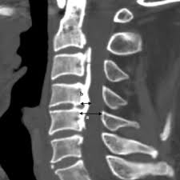
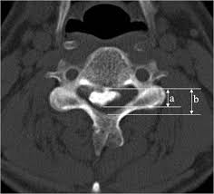

Source: Ha, Yoon, and Jun Jae Shin. "Comparison of clinical and radiological outcomes in cervical laminoplasty versus laminectomy with fusion in patients with ossification of the posterior longitudinal ligament." Neurosurgical Review 43.5 (2020): 1409-1421.
1) Description of Measurement
The Canal Occupying Ratio (COR), also referred to as the occupying ratio or occupation ratio, quantifies the degree of spinal canal compromise caused by ossification of the posterior longitudinal ligament (OPLL). It is expressed as a percentage representing the proportion of the spinal canal that is occupied by the ossified mass at the site of maximum compression.
The COR is one of the most important radiographic parameters used in preoperative planning for cervical OPLL, as it directly reflects the severity of canal stenosis and helps guide the choice of surgical approach. It is conventionally measured on axial computed tomography (CT) images at the level of the most prominent OPLL, which allows precise delineation of both the ossification and the bony spinal canal.
The COR is frequently used in conjunction with the K-line to create a comprehensive assessment of OPLL severity. While the K-line integrates cervical alignment and OPLL size into a single sagittal parameter, the COR provides a direct cross-sectional quantification of how much of the canal is compromised by ossification. Together, they are essential for determining in the decision-making process for posterior decompression (laminoplasty) versus anterior cervical decompression and fusion (ACDF) or combined anterior-posterior surgery.
2) Instructions to Measure
Axial Canal Occupying Ratio:
• Obtain a CT scan of the cervical spine with axial images through the OPLL
• Identify the axial CT slice at the level of the maximum OPLL thickness (diameter “D”) (the most prominent point of the ossification)
• Measure the anteroposterior (AP) diameter of the spinal canal at the level of the maximum OPLL, from the posterior vertebral body cortex to the inner cortex of the lamina
• Measure the maximum thickness of the OPLL (diameter “d”) at the same level, from the posterior vertebral body cortex to the most posterior extent of the ossification
• Calculate the COR: COR (%) = (d / D) × 100
Sagittal Canal Occupying Ratio:
· Obtain a midsagittal CT image of the cervical spine through the center of the spinal canal with clear visualization of the OPLL
· Identify the midsagittal slice at the level of the maximum OPLL thickness (the point where the ossification protrudes most posteriorly into the canal)
· Measure the sagittal anteroposterior (AP) diameter of the spinal canal (diameter “D”) at the level of the maximum OPLL, from the posterior cortex of the vertebral body to the anterior cortex of the lamina (or spinolaminar line)
· Measure the maximum sagittal AP thickness of the OPLL (diameter “d”) at the same level, from the posterior cortex of the vertebral body to the most posterior margin of the ossification
· Calculate the Sagittal COR: Sagittal COR (%) = (d / D) × 100
3) Normal vs. Pathologic Ranges
- There is no grossly accepted COR cutoff which has been validated with high specificity or specificity as a predictor of poor
• COR < 40%: generally associated with milder canal compromise; posterior decompression (laminoplasty) typically yields good neurological recovery in this range, particularly with K-line (+) status
• COR 40–60%: moderate canal compromise; laminoplasty may still be effective depending on K-line status and cervical alignment, but outcomes become more variable
• COR ≥ 50%: Park et al. (2025) identified COR ≥ 50% as a critical threshold in a 575-patient multicenter study. In patients with high COR (≥50%), K-line status had a stronger influence on surgical outcomes, with K-line (–) patients faring significantly worse after posterior decompression. ADF was associated with superior JOA recovery in this subgroup
• COR ≥ 60%: strongly associated with poor neurological outcomes after laminoplasty. Iwasaki et al. (2007) first demonstrated that patients with COR ≥60% had significantly worse outcomes after laminoplasty compared to those with COR <60%. Nakashima et al. (2019) showed in a 142-patient study that COR >60% was associated with a roughly 5-fold greater risk of poor neurological recovery after laminoplasty. ACDF is generally recommended based on this paper when COR exceeds 60%. Fujimori et al. (2014) built on this finding that patients finding that patients with COR >60% achieved a significantly better mean JOA recovery rate with ACDF (53%) compared to laminoplasty (30%). This study was limited in study design and sample size however, further highlighting the concerns with available literature.
Key Criterion: A canal occupying ratio ≥60% is a published threshold indicating that laminoplasty alone is likely insufficient for adequate decompression. Anterior decompression and fusion or combined anterior-posterior approaches are generally recommended for these patients. However, it is critical for the surgeon to be aware that this is not an established rule, as direct evidence-based suggestions are confounded by limited evidence and lack of homogeneity in published study methodology.
The surgeon should therefore give caution to a COR between 40% and 60% given the existing cited literature. COR values <40% may also warrant consideration and caution. COR should not be used in isolation and should be considered with K-Line when deciding on posterior decompression techniques (laminoplasty), anterior techniques, or combined anterior-posterior techniques.
4) Important References
Iwasaki M, Okuda S, Miyauchi A, et al. Surgical strategy for cervical myelopathy due to ossification of the posterior longitudinal ligament: Part 1: Clinical results and limitations of laminoplasty. Spine (Phila Pa 1976). 2007 Mar 15;32(6):647-53. doi: 10.1097/01.brs.0000257560.91147.86.
Iwasaki M, Okuda S, Miyauchi A, et al. Surgical strategy for cervical myelopathy due to ossification of the posterior longitudinal ligament: Part 2: Advantages of anterior decompression and fusion over laminoplasty. Spine (Phila Pa 1976). 2007 Mar 15;32(6):654-60. doi: 10.1097/01.brs.0000257566.91177.cb.
Fujimori T, Iwasaki M, Okuda S, et al. Long-term results of cervical myelopathy due to ossification of the posterior longitudinal ligament with an occupying ratio of 60% or more. Spine (Phila Pa 1976). 2014 Jan 1;39(1):58-67. doi: 10.1097/BRS.0000000000000054.
Nakashima H, Tetreault L, Bhatt S, et al. What are the important predictors of postoperative functional recovery in patients with cervical OPLL? Results of a multivariate analysis. Global Spine J. 2019 May;9(3):277-287. doi: 10.1177/2192568218790766.
An SB, Lee JJ, Kim TW, et al. Evaluating the differences between 1D, 2D, and 3D occupying ratios in reflecting the JOA score in cervical ossification of the posterior longitudinal ligament. Quant Imaging Med Surg. 2019 Jun;9(6):952-959. doi: 10.21037/qims.2019.05.26.
Park SJ, Lee CS, Chung SS, et al. The role of K-line and canal-occupying ratio in surgical outcomes for multilevel cervical ossification of the posterior longitudinal ligament: a retrospective multicenter study. Neurospine. 2025 Jun;22(2):526-537. doi: 10.14245/ns.2448938.469.
Nouri A, Kato S, Engel J, et al. Review of radiological parameters, imaging characteristics, and their effect on optimal treatment approaches and surgical outcomes for cervical ossification of the posterior longitudinal ligament. Neurospine. 2019 Sep;16(3):506-516. doi: 10.14245/ns.1938222.111.
5) Other info….
The COR should be measured on CT rather than plain radiographs or MRI, as CT provides the most precise delineation of the ossified mass and bony canal boundaries. MRI may underestimate the extent of ossification.
When the COR is combined with K-line status, surgical decision-making becomes more nuanced. Park et al. (2025) demonstrated that in patients with low COR (<50%), outcomes after posterior decompression were similar regardless of K-line status. However, in patients with high COR (≥50%), K-line (–) patients had significantly poorer recovery and laminectomy with fusion (LF) outperformed laminoplasty (LP) in these complex cases. This is likely due to the ability for clinically adequate cord drift back in patients with severe OPLL as a direct result of their laminectomy.
The morphology of the OPLL also matters: hill-shaped OPLL (focal, beak-like protrusion) tends to cause more severe focal cord compression than plateau-shaped OPLL (diffuse, flat narrowing) at comparable COR values. Consider OPLL shape classification in addition to COR for comprehensive surgical planning.
Consider evaluating COR in conjunction other parameters including but not limited to, K-line status, C2–C7 Cobb angle, T1 slope, OPLL classification type (segmental, continuous, mixed, localized), OPLL shape (hill vs. plateau), increased signal intensity (ISI) on T2 MRI, for comprehensive preoperative surgical planning.
Some alternative measurement methods do exist for measurement of COR and include:
• 2D (area) occupying ratio: the ratio of the cross-sectional area of the OPLL to the total cross-sectional area of the spinal canal on axial CT
• 3D (volume) occupying ratio: the ratio of the volume of the OPLL to the volume of the spinal canal, calculated using 3D CT reconstruction software)
The conventional axial or sagittal dimension COR measurements remains the most widely used and practical method for clinical assessment. While 2D (area) and 3D (volume) occupying ratios have been described and may offer additional information, it is more timely and repeatable to measure in routine clinical practice while conferring significant clinical advantage to the surgeon.